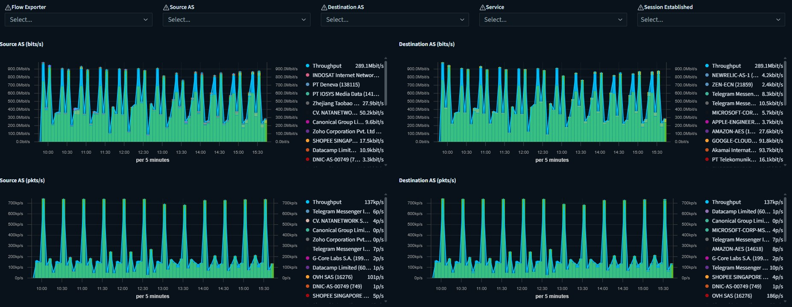

Project & Home Labs
Eksplorasi Riset, eksperimen dan implementasi praktis dalam bidang Networking, Cybersecurity, Artificial Intelligence (AI), dan Blockchain.
~ Ervinda Pratama
Cybersecurity Project & Home Labs
🔍 Vulnerability Scanning dengan NMAP
- 🔹Pemindaian jaringan untuk identifikasi celah keamanan
- 🔹Audit open port/service pada server atau device internal
- 🔹Rekomendasi allow/deny traffic berdasarkan temuan open port/service yang terbuka dari device network/server
- 🔹Dokumentasi penerapan rules policy sesuai dengan diskusi bersama tim
📈 Monitoring Traffic Flow dengan Elastiflow

- 🔹Instalasi elastiflow & opensearch index via docker
- 🔹Integrasi elastiflow dengan opensearch sebagai dashboard dan penyimpanan data index
- 🔹Konfigurasi netflow pada core device network (router/firewall)
- 🔹Pembuatan dashboard monitoring traffic flow
- 🔹Analisa log traffic melalui data raw dan dashboard
- 🔹Review dan dokumentasi system monitoring
- 🔹Reporting history traffic flow pada jaringan internal/external
- 🔹Maintenance Data Index & Backup rutin (weekly)
👨💻 Build Script Vulnerable Check with InternetDB Shodan
- 🔹Research terkait tools shodan
- 🔹Research integrasi API dari InternetDB
- 🔹Build script python untuk scrapping data (query:IP Address,CVE) melalui API
- 🔹Pengujian script untuk melakukan search vulnerable pada suatu IP Public
🕵️♂️ Build Honeypot & Honeynet dengan T-POT
- 🔹Research terkait apa itu Honeypot dan Honeynet
- 🔹Research software T-POT
- 🔹Download & build file .iso untuk T-POT
- 🔹Instalasi T-POT OS
- 🔹Konfigurasi listening port service
- 🔹Konfigurasi Forwarding IP Public menuju ke port service T-POT
- 🔹Review dan monitoring attack from Public
- 🔹Analisis log attack dan learning metode dari proses setiap attacker